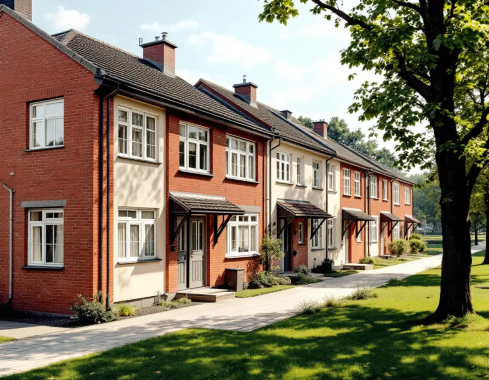
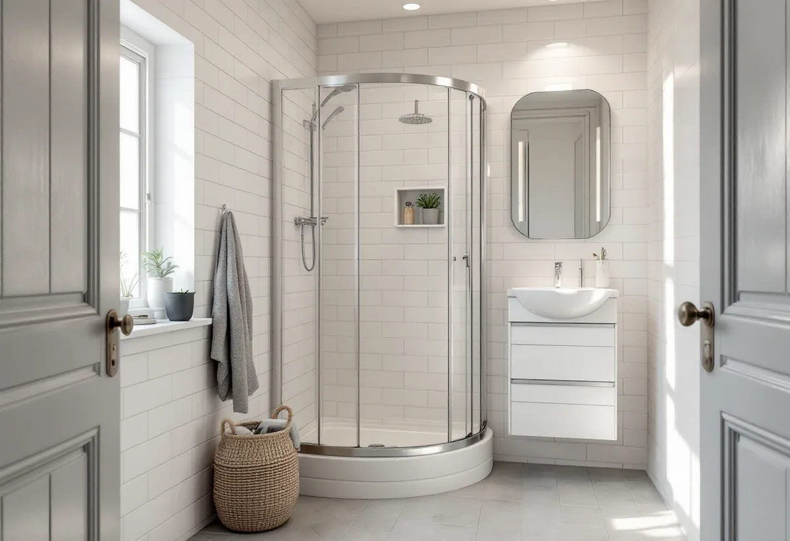
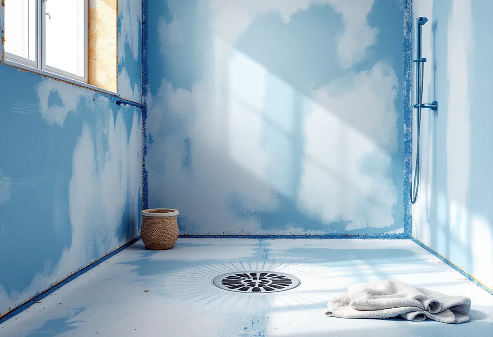

Platsbesök
Vi ser badrummet, ventilationen och vad som syns utvändigt.
Radhusen i Vällingby ligger i ett riksintresse för kulturmiljövården, men badrummet inne i huset kan renoveras utan bygglov. Det som syns på fasaden är en annan sak. Geal Entreprenad AB renoverar badrum i radhus och villor i Vällingby och Råcksta och vet var gränsen går.

Vällingby–Råcksta planerades som landets första ABC-stad, med arbete, bostäder och centrum och tunnelbana in till stan, och ingen skulle ha längre än 900 meters gångväg till tunnelbanan. Området byggdes ut under 1950-talet med högre hus närmast centrum och längst ut områden med radhus och småhus, och det är riksintresse för kulturmiljövården.
Stadens strategi för småhusområden lyfter fram flera väl gestaltade radhus- och villaområden i Vällingby, bland dem de kulturhistoriskt synnerligen värdefulla Atlantis i nordost och Omega i nordväst. Bland riksintressets karaktärsdrag nämns de ursprungliga husens gestaltning och byggnadsdetaljer som fönster, entrépartier, balkonger och räcken.

Stockholms stad skriver att du inte behöver bygglov för att flytta kök eller badrum. En anmälan och ett startbesked krävs om flytten påverkar bärande konstruktion eller brandskydd, om ventilationen ändras väsentligt eller om en ny VA-stam tillkommer i ett nytt schakt. Vid alla ändringar ska du ta hänsyn till byggnadens kulturhistoriska värden.
Enligt stadens områdesfakta för 2025 finns 220 småhus med äganderätt och 228 med bostadsrätt i Vällingby, och i Råcksta 299 med äganderätt och 91 med bostadsrätt. Är huset en bostadsrätt kan du också behöva tillstånd från föreningen, som staden påpekar. Staden råder dessutom att du tidigt rådgör med skorstensfejarmästaren om förutsättningarna för en ny eller ändrad ventilationskanal.
Monteras ett aggregat, ventilationskanaler eller annan anordning utvändigt kan det bedömas som en ändring av byggnadens yttre utseende, och då behövs bygglov, skriver staden. Inom ett riksintresse för kulturmiljövården, och för byggnader som är markerade blå eller gröna i Stadsmuseets karta, krävs bygglov även för åtgärder som annars kan vara lovfria.
Ett nytt badrum i ett Vällingbyradhus planerar vi därför så att ventilationen går genom de befintliga kanalerna och att inget nytt syns på fasaden eller taket. Behövs en utvändig ändring tar vi fram underlag till en ansökan innan arbetet börjar.
GVK delar in våtrummet i plats för bad eller dusch, våtzon 1 och våtzon 2. Våtzon 1 är väggarna vid duschen och en meter utanför den, och hela golvytan, och platsen för bad eller dusch omfattar golv och väggar upp till 2,0 meter över färdigt golv. Den del av väggytan som inte är våtzon 1 är våtzon 2 och ska också ha ett vattentätt skikt.
GVK påpekar att ett badkar som installeras i ett rum som var anpassat för dusch kan göra att våtzon 2 klassas om till våtzon 1. I ett litet radhusbadrum ligger därför ofta större delen av väggarna i våtzon 1. Om husens tak kan du läsa under takläggare i Vällingby, och om tjänsten i stort under badrumsrenovering.

Vi ser badrummet, ventilationen och vad som syns utvändigt.
Riksintresset och Stadsmuseets karta kontrolleras om något ändras utvändigt.
Rivning, VVS, el, tätskikt och ytskikt står var för sig.
Gamla skikt rivs och väggar och golv byggs upp.
Tätskikt efter våtzonerna, sedan kakel, klinker och porslin.
Vi går igenom badrummet och lämnar dokumentationen.
För ett småhus med äganderätt ger installation av dusch, toalett och handfat, kakel- och klinkersättning och vatten- och avloppsledningar rotavdrag. Är huset en bostadsrätt gäller avdraget arbete innanför tak, väggar och golv som du ansvarar för enligt stadgarna.
Avdraget är högst 30 procent av arbetskostnaden och högst 50 000 kronor per person och år. Geal drar avdraget direkt på fakturan.
Rummets storlek, om något ska flyttas, vad som finns under golvet, ventilationen, ytskikt och porslin och om något måste ändras utvändigt. Efter ett gratis platsbesök får du ett skriftligt kostnadsförslag.
Tätskikt, golvbrunn, el, VVS och intyg.
Badrumsrenovering i Stockholm →Takbyte, takbesiktning och plåtarbeten.
Takläggare i Vällingby →Radhusen i riksintresset Vällingby–Råcksta.
Takrenovering i Vällingby →Riksintresset och villaområdena.
Attefallshus i Vällingby →Bygga till i riksintresset.
Byggföretag i Vällingby →Puts från 1950-talet och kulör i riksintresset.
Fasadmålning i Vällingby →Tegel, puts och skivor på tunnelbanestadens hus.
Fasadrenovering i Vällingby →Radhus och kedjehus i riksintresset.
Fönsterbyte i Vällingby →Radhusens fönster.
Fönsterrenovering i Vällingby →Gamla mattor, lim och asbest.
Golvläggare i Vällingby →Lamellgolv, svikt och slitskikt.
Golvslipning i Vällingby →Kök i lägenheter och radhus.
Köksrenovering i Vällingby →Radhus och lägenheter i ABC-staden.
Målare i Vällingby →Takplåt, rännor och beslag i riksintresset.
Plåtslagare i Vällingby →Entréer, dörrar och räcken på radhusen.
Snickare i Vällingby →Kälvesta och husgrupperna.
Takbyte i Vällingby →Väggar från 1950-talet.
Tapetsering i Vällingby →Radhusen, riksintresset och lovet.
Tillbyggnad i Vällingby →ABC-staden, eternit och föreningen.
Totalrenovering i Vällingby →